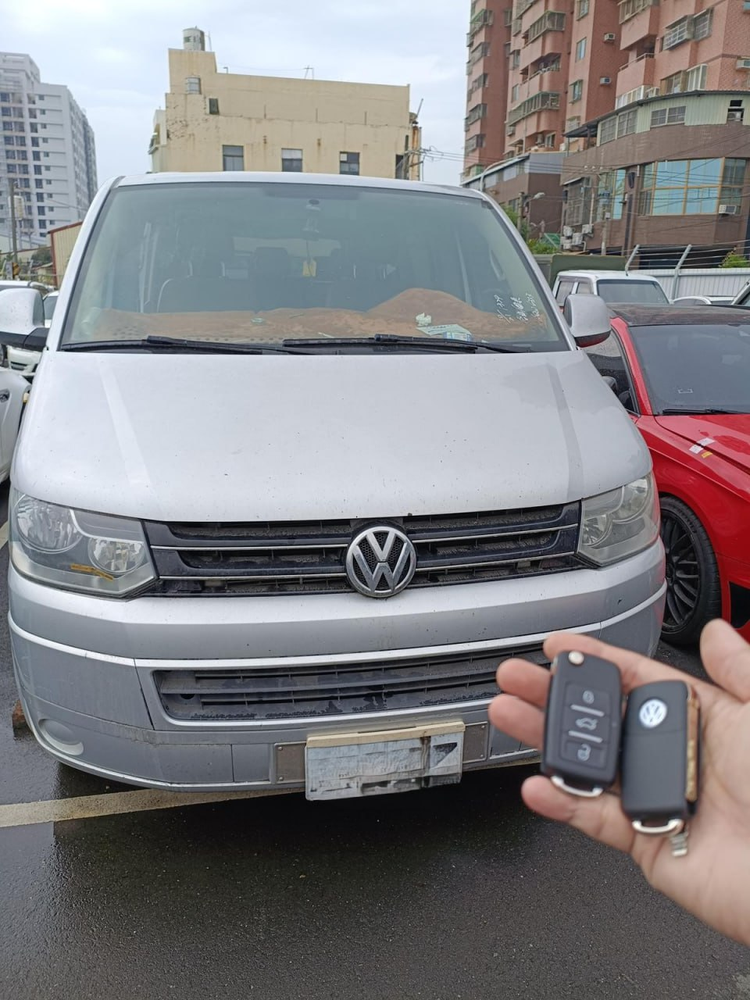

高雄 VW T5 晶片鑰匙全丟：現場快速發動救援

現場實拍：高雄地區福斯 T5 晶片鑰匙救援完成
商旅車主最怕的鑰匙全丟，極致核心在高雄提供 24H 現場支援。
免拖吊，守護您的商務戰力
T5 車體沉重且全丟時無法解除排檔鎖，強行拖吊容易受損。我們直接到場進行數據重構，當場配製兩把全新摺疊晶片鑰匙，1 小時內讓您恢復工作。
現場實拍：高雄地區福斯 T5 晶片鑰匙救援完成
商旅車主最怕的鑰匙全丟，極致核心在高雄提供 24H 現場支援。
T5 車體沉重且全丟時無法解除排檔鎖，強行拖吊容易受損。我們直接到場進行數據重構，當場配製兩把全新摺疊晶片鑰匙，1 小時內讓您恢復工作。